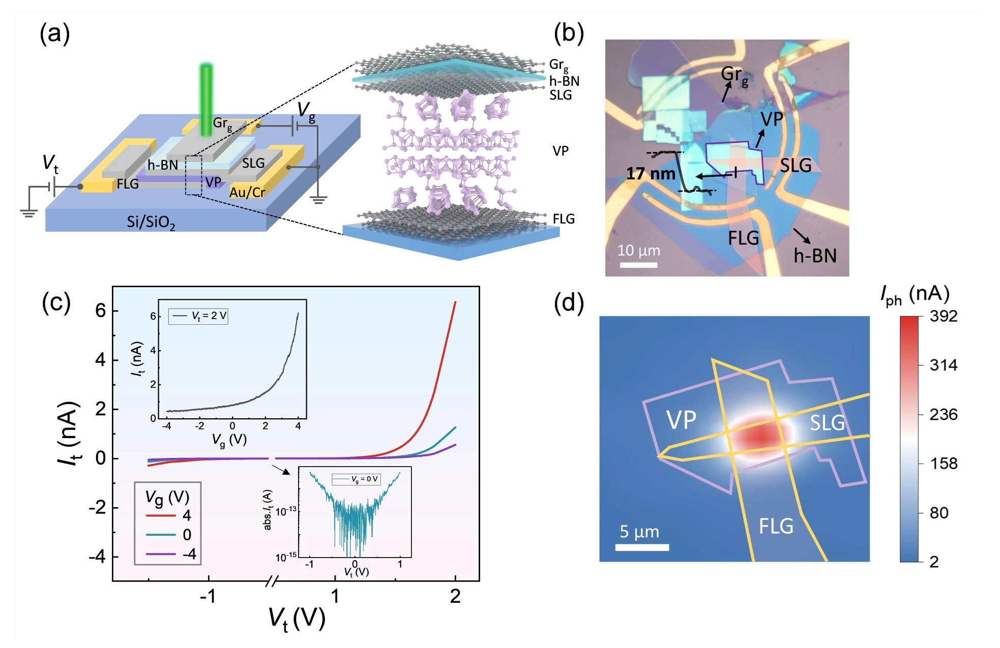
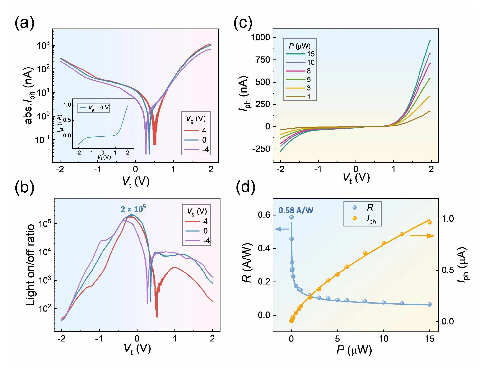

垂直紫磷隧穿结：缩短输运路径与增强光探测
石墨烯 / 紫磷垂直隧穿结结构
器件将薄层紫磷夹在单层石墨烯与少层石墨烯电极之间，并以 h-BN/Si 等结构提供栅控。与源漏电极位于同一平面的光晶体管不同，光生载流子只需跨越紫磷厚度即可被上下电极收集，避免在高电阻沟道中进行长距离面内漂移和扩散。

栅压和偏压共同改变势垒形状
上下石墨烯的费米能级会随栅压和源漏偏压移动，从而改变石墨烯/紫磷界面的势垒高度与隧穿窗口。暗态下可把费米能级调到抑制载流子注入的位置以降低背景电流；光照后，紫磷吸收光子产生载流子并改变结区占据状态，使垂直隧穿电流显著增加。
缩短输运路径，提高响应度并保持高开关比
室温 532 nm 测试显示，通过分别优化偏压和栅压，器件最高响应度达到 0.58 A/W，光暗电流比超过 2 × 10⁵。响应度与开关比的最优工作点并不完全相同：增大隧穿电流有利于信号幅度，但也可能抬高暗电流，因此需要利用双电场调节取得平衡。

带隙以上吸收与带隙以下响应呈现不同来源
论文还观察到入射光子能量低于紫磷带隙时仍存在可测光电流，并且红外响应在温度和偏振依赖上不同于可见光响应。这说明器件中可能同时存在带间吸收、缺陷或界面辅助隧穿等多种光生电流路径。垂直结因而不仅提升载流子收集，也为区分和利用不同光响应机制提供了平台。
论文来源
Sensitive photodetection in a violet phosphorus tunnel junction
Ying Liu, Weilin Chen, Jiaxin Wu, Shuangxing Zhu, Ruan Zhang, Junning Mei, Yu Chen, Qi Sun, Hanchen Liu, Kenji Watanabe, Takashi Taniguchi, Jinying Zhang, Gang Liu, Xinghan Cai
Optics Letters 50 (2025), 3114–3117
DOI：10.1364/OL.561784